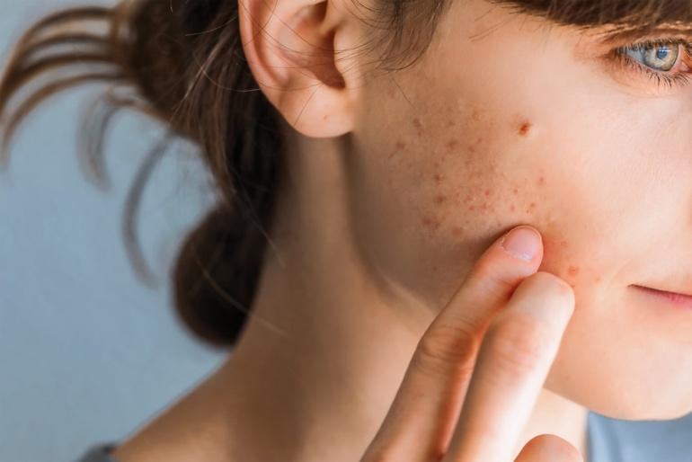
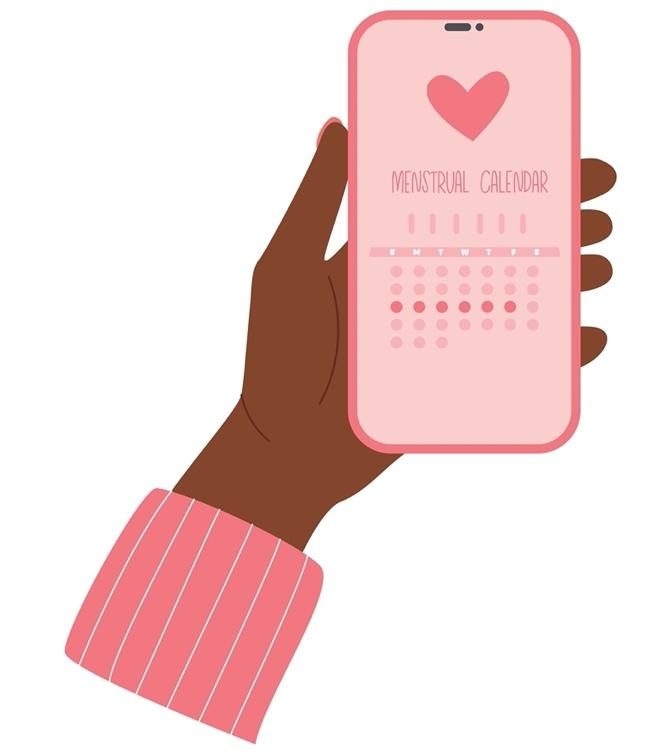
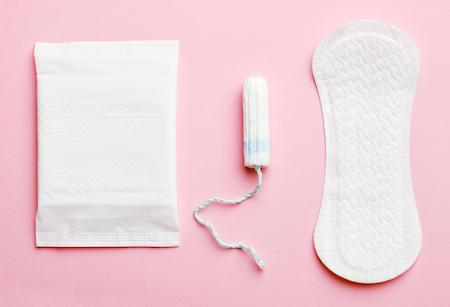
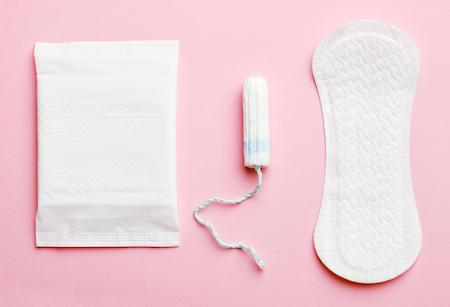

Puberty is the time when your body is growing and changing into an adult body. This means changes in how the body looks and works, including starting periods and growing breasts. Most girls start puberty between the ages of 8 and 13, but it can start earlier or later. Everybody is different.
If you are a teen girl, chances are puberty has already started. Puberty starts when the brain tells the body to make more hormones. Hormones are chemical messengers that help control how the body grows and develops. In girls, the hormone estrogen plays a big role in these changes.
Growing up can be exciting and hard at the same time. You may feel proud one day and overwhelmed the next. That is normal. You are not alone. There are people who care about you and want to help you feel your best. Talk with your care team to get ideas and support.
During your teen years, some changes you may notice include:
Breast growth: Your breasts may keep growing.
Body hair: Hair grows under your arms and on the skin folds around your vagina. You may also see more hair on your arms or legs.
Skin changes: The changes in your hormones may give you pimples or oily skin. Sometimes, pimples are called acne. This is common during puberty. If your acne gets worse or does not go away, talk to your care team. They may suggest special creams or pills to help clear your skin.

Body shape: You may get wider hips and more curves in certain places, like your thighs or chest.
Body odor and sweat: You may sweat more. Daily showers and using deodorant can help you feel fresh.
Growth spurts: You may get taller or notice your hands and feet growing faster.
Changes in mood: Hormones can cause mood swings. You may feel happy one minute and sad or angry the next. This is common. Exercise, like walking or dancing, is a good option for managing stress and mood swings.
When puberty begins, each month, your uterus makes a soft lining inside. The brain tells the body to start releasing eggs from the ovaries. The body does this each month to prepare for a possible pregnancy. If a pregnancy is not started, your body does not need the lining. The lining of the uterus leaves the body during a period. It leaves the body as blood and sometimes clots. This is called menstruation.

Periods are often irregular at first and may be light or heavy. You may skip a month or bleed more in some months. This is usually normal.
Some girls may feel tired, have cramps, or feel moody during their period.
Most periods last 3 to 7 days.
Over time, periods usually become more regular and may happen every 21 to 35 days. You can track them on a calendar or period tracking app.

Period blood can look different each day. This is normal.
At the start or end of your period, the blood may be light brown or pink. This is called spotting.
During the middle of your period, the blood may be bright red or dark red.
Sometimes, you may see small clumps or clots. These are just bits of the soft lining from inside your uterus.
The blood may be thicker or thinner depending on the day.
All of these are normal. If you are ever unsure, ask a trusted adult or your care team.
Cramps are pain in your lower belly. They happen when your uterus tightens to push out the lining. Teens may have stronger cramps because their bodies are still adjusting.
This is normal and there are ways to feel better:
Use a heating pad on your belly.
Try gentle movement or rest.
Ask an adult if you can take pain relief medicine, like ibuprofen, called Advil® or Motrin®, or acetaminophen, called Tylenol®.
Here are some of the supplies you will need when you get your period. You can decide which option is most comfortable for you. Whichever you choose, make sure to follow the instructions on how often to replace it with a clean version.
Pads: These are the easiest to use and often the best option for younger girls. They stick to the underwear to catch the blood. They come in different lengths and thicknesses, so you can pick the ones that are comfortable for you. They should be changed as needed during the day. This can be every 4 to 8 hours or sooner. Some are made extra thick or long to last overnight and help prevent leaks. Some are very small or thin and can be called a liner or pantyliner. They can be used in the days before you expect your period as well as at the end.
Tampons: These go inside the vagina to catch the blood before it comes out. It takes some time and practice to learn how to use them. Some have a plastic or cardboard “applicator” that helps put them in. Some do not have applicators. Generally, tampons must be changed every 4 to 6 hours. Do not leave tampons in for longer than 8 hours. A rare but life-threatening infection called toxic shock syndrome can happen.
Period underwear: These look like regular underwear but can hold period blood. They are washed and reused. You can use them on their own. If you have heavy bleeding, these can be used as a backup for a tampon or menstrual cup or disc. You may need 3 to 10 pairs of these for a period. They are easy to use.
Menstrual cup: A menstrual cup is a reusable, bell-shaped silicone or rubber device you put into the vagina to collect blood before it comes out. Cups come in different sizes. Usually small or standard is appropriate for teens. These can take time and practice to learn how to use and may be better for older girls. A cup can be worn for up to 12 hours. When it is full, it is emptied into the toilet, cleaned in the sink, and reinserted.
Menstrual disc: This works in a similar way to a menstrual cup, but it sits higher in the vagina. The disc covers the cervix. You insert and remove it with your fingers, which can take practice. Like the cup, the disc can be worn for up to 12 hours. Menstrual discs can be reusable or disposable.
 

During your teen years, you may start to have crushes or feel physical attraction, which is a normal part of growing up. Sexual health means keeping your body safe and making good choices about sex and relationships. Here are some things to know about your sexual health:
Once you start getting your period, you can become pregnant if you have sex. You can become pregnant at any time during your cycle, even if periods are irregular. Even if you are not ready for sexual activity, it is important to understand how your body works. Your care team can share resources, such as trustworthy websites, books, or classes, to help you learn about sex and pregnancy.
Talk to your care team about safe sex, birth control, consent, and protecting yourself from sexually transmitted infections, also called STIs.
If you are not ready to talk with a parent, you can still talk with a trusted adult or care team member.
If you ever feel pressured, scared, or unsure, you have the right to say no. Your body belongs to you.
Puberty brings changes in how teens think, feel, and act. This is normal. You may notice:
Mood swings: Shifts between feeling happy, sad, angry, or excited can happen quickly. Hormone changes can make your feelings stronger.
Need for independence: You may want more privacy and ask to make more of your own decisions. You may spend more time with friends than family, and care more about friends’ opinions.
Self-esteem changes: You may become more worried about body image, popularity, or fitting in at this time. You may compare yourself to others more often. If these things make you feel bad about yourself, find ways to balance them with positive activities and messages. Sports, hobbies, and time with friends and family can remind you of your worth.
Thinking about the future: You may start to consider your own personal goals, beliefs, and values, and how they compare to how you were raised.
While these mental and emotional changes are normal, they may feel confusing or overwhelming. Most teens do not need therapy or counseling, but if you are very sad, anxious, or confused, talking to a counselor can help. Your care team can give you resources if you need to find mental health care.
Your care team can help you with:
Period problems like pain or heavy bleeding
Acne or skin care
Questions about birth control or safe sex
Mental health and emotional support
Growth and nutrition needs
They are here to help you grow in a safe, healthy way.
If you have bad cramps during periods, your care team may suggest acetaminophen, like Tylenol®, or ibuprofen, like Advil® or Motrin®, to help with pain. Talk to your care team first if you take blood thinners, have a history of bleeding or stomach ulcers, or have a history of kidney or liver disease.
Eat fruits and vegetables: These give your body vitamins to grow strong.
Drink water: Your body needs water to stay healthy and feel good.
Exercise daily: Try to move your body for at least 1 hour a day. Exercise can help with cramps, moods, and general wellness.
Get enough sleep: Teens need 8 to 10 hours of sleep each night.
Limit sugary drinks and snacks: These can affect your energy and overall health.
Shower daily: Showering keeps your skin clean and helps prevent body odor.
Use deodorant: Deodorant helps with sweat and body odor under your arms.
Change period products often: Follow the instructions on your period products. Most need to be changed every 4 to 6 hours to stay clean and avoid infection.
Practice good skin care: Wash your face twice a day to help with excess oil and acne.
Limit screen time: Too much time online, especially on social media, has been shown to have bad effects on teens. Set time limits, make sure to turn off screens before bedtime, and try to spend time with friends and family.
Your body will keep changing into your late teens. Keep your regular checkups, and follow any care team advice. They will help you stay healthy, safe, and informed. If you ever feel unsure or have a question, ask.
Thank you for trusting us with your care. We are here to support you and want you to feel your best. Contact us with any questions.
IF YOU HAVE A MEDICAL EMERGENCY, CALL 911 OR GO TO THE EMERGENCY ROOM.
The information presented is intended for general information and educational purposes. It is not intended to replace the advice of your health care provider. Contact your health care provider if you believe you have a health problem.
Last updated May 2025
© 2025 Mytonomy, Inc. All rights reserved.